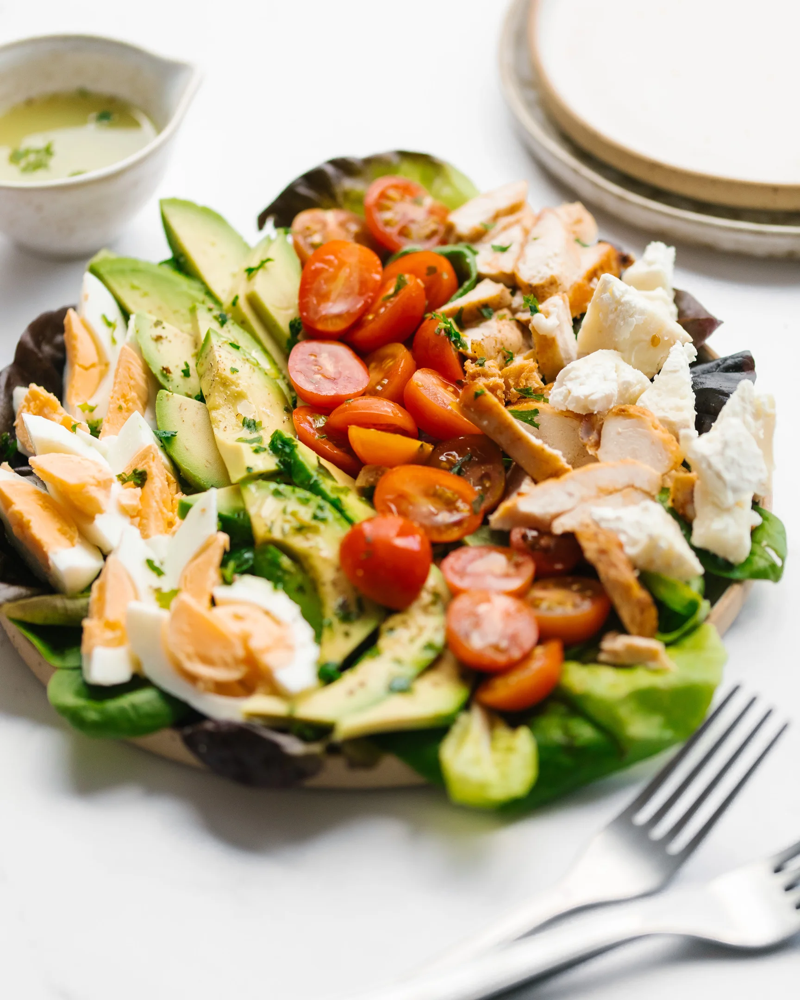

Cobb Salad
Home

Description
A Cobb salad is an American dish that consists of lettuce topped with bacon,
chicken, boiled eggs, tomatoes, and other ingredients arranged in neat rows.
It is traditionally served as a main course. The origins of the classic salad is unclear,
but many believe it was created in the late 1930s at the Brown Derby restaurant in Hollywood.
Ingredients
- 6 slices bacon
- 3 large eggs
- 1 head iceberg lettuce, shredded
- 3 cups chopped, cooked chicken meat
- 2 ripe tomatoes, seeded and chopped
- 3/4 cup blue cheese, crumbled
- 3 green onions, chopped
- 1 avocado - peeled, pitted and diced
- 1 (8 ounce) bottle Ranch-style salad dressing
Steps
-
Place eggs in a saucepan and cover completely with cold water;
bring to a boil, then cover and remove from heat.
Let eggs sit for 10 to 12 minutes, then cool, peel and chop
-
While the eggs are cooking, place bacon in a large, deep skillet.
Cook over medium-high heat until evenly brown, 7 to 10 minutes.
Drain, crumble, and set aside.
-
Divide shredded lettuce among individual plates.
Arrange rows of bacon, eggs, chicken,
tomatoes, blue cheese, green onions, and avocado on top.
-
Drizzle with dressing and enjoy!